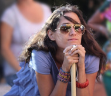
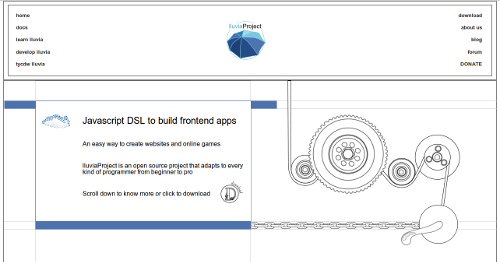
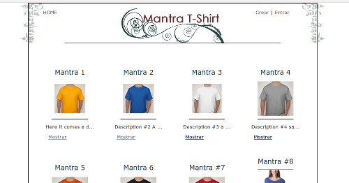
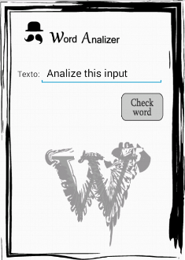
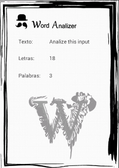
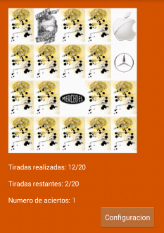
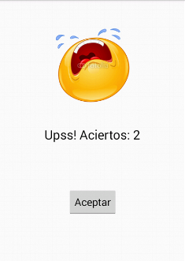
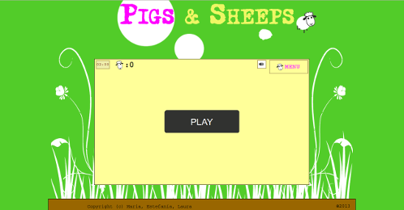
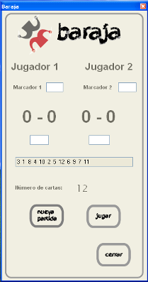
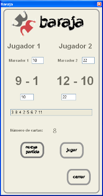

- FORMACION ACADEMICA
- 2012 - 2014_____F. P. Grado Superior en Desarrollo de Aplicaciones Multiplataforma. Colegio Santo Domingo Savio. Madrid.
- 2000 - 2001_____Master de Creatividad Publicitaria. The School Agency. Madrid
- 1997 - 2000_____F. P. Grado Superior en Publicidad y Relaciones Públicas. Universidad San Pablo CEU. Madrid
- Conocimientos de:
- Javascript, Ruby, C, C#, Java Android, Oracle SQL, HTML5, CSS3, Photoshop, Illustrator, Linux, Mac, Git, UML, Visual Studio.

- IDIOMAS
- Título de la Escuela Oficial de Idiomas, nivel C2 (advanced) Nota: 8.8
- Nociones básicas de francés e italiano.
- EXPERIENCIA LABORAL
- 2014 - Presente_____Cofundadora y desarrolladora de proyecto open source LluviaProject. LluviaProject es un framework multihilo en Javascript que comparte interfaz con Ruby y desarrolla una biblioteca propia de ventanas, efectos y vectores.
- 2011 - 2012________Encargada de Comunicación Zoya Bograd Kids. Nueva York, USA. Actualización de la página web, diseño de nuevos productos y diseño y codificación de boletines electrónicos.
- 2001 - 2006________Redactora publicitaria, llegando al cargo a ocupar el cargo de Redactora Senior.
- Agencias: Publicis, DDB, TBWA, FCB Tapsa y 210 Publicidad.
- Clientes: MacDonald's, PlayStation, Telefonica, Michelin, NH Hoteles, Soberano, Hasbro, Winston, Junta de Andalucia, Hoteles La Toja y Diario de Sevilla, entre otros.
- Experiencia principalmente en la creación y desarrollo de piezas de publicidad de televisión, prensa y radio, con conocimientos en las áreas de eventos, marketing directo y publicidad en Internet.
- OTROS DATOS
- May. 12 - Jul. 12_____Curso Analista Programador de la Comunidad de Madrid (260 horas). Colegio Santo Domingo Savio. Madrid
- Nov. 09 - Nov. 10____Curso Inglés. Nivel Advanced. LISMA. Nueva York, USA
- Oct. 08 - Oct. 09_____Curso Photoshop. Spanish American Institute. Nueva York, USA
- Oct. 07 - Nov. 09_____Curso Inglés. Nivel Upper Intermediate. Spanish American Institute. Nueva York, USA
- 2007 - 2012________ Con intención de mejorar su nivel de inglés, se trasladó a Nueva York, donde estudió y posteriormente trabajó, adquiriendo los conocimientos y experiencia necesarios para desenvolverse en inglés en el ámbito laboral. También adquiró sus primeros conocimientos de programación.

Web del proyecto personal lluviaProject. Esta web debía reflejar las tendencias del mercado del software libre. Debía ser limpia, tener movimiento, con imágenes e iconos planos. Además, según las tendencias actuales, la página principal debería mostrar los contenidos de la web resumidos y de manera clara, para que el usuario sepa que va a encontrar en cada sección antes de acceder a ella. Se pedía que también que estuviera relacionada con la lluvia o el agua de alguna manera, motivo por el que se eligió el color azul como para la parte de la web que primero ve el usuario.

Web programada en Rails. La idea era diseñar una web para la venta de camiseta con mensajes relacionados con el bienestar emocional. Un mantra es una frase que se repite interiormente y que proporciona consuelo, estabilidad o paz emocional, de manera que la web debía transmitir estos mismos conceptos en cuanto a diseño. Debía ser limpia y con reminiscencias a aquellos paises de los que la meditación es originaria.
back to top
LluviaProject
Web del proyecto personal lluviaProject. Esta web debía reflejar las tendencias del mercado del software libre. Debía ser limpia, tener movimiento, con imágenes e iconos planos. Además, según las tendencias actuales, la página principal debería mostrar los contenidos de la web resumidos y de manera clara, para que el usuario sepa que va a encontrar en cada sección antes de acceder a ella. Se pedía que también que estuviera relacionada con la lluvia o el agua de alguna manera, motivo por el que se eligió el color azul como para la parte de la web que primero ve el usuario.
Mantra T-Shirt
Web programada en Rails. La idea era diseñar una web para la venta de camiseta con mensajes relacionados con el bienestar emocional. Un mantra es una frase que se repite interiormente y que proporciona consuelo, estabilidad o paz emocional, de manera que la web debía transmitir estos mismos conceptos en cuanto a diseño. Debía ser limpia y con reminiscencias a aquellos paises de los que la meditación es originaria.


Analizador de palabras desarrollado en Java para Android. Esta aplicación cuenta el número de palabras y el número total de letras en función de un texto dado.


Juego desarrollado en Java para Android. Se trata de encontrar las parejas de logotipos de marcas conocidas, emparejando los logotipos originales con los actuales en un número máximo de tiradas. En función del número de aciertos, se muestra resultado u otro.
back to top
Word Analizer
Analizador de palabras desarrollado en Java para Android. Esta aplicación cuenta el número de palabras y el número total de letras en función de un texto dado.
Memory Game
Juego desarrollado en Java para Android. Se trata de encontrar las parejas de logotipos de marcas conocidas, emparejando los logotipos originales con los actuales en un número máximo de tiradas. En función del número de aciertos, se muestra resultado u otro.

Juego online desarrollado con lluviaProject. El juego consiste en conducir al menos seis ovejas hasta el corral. Para ello, se usará el cerdito pastor, el cual responde a las pulsaciones del ratón sobre el canvas. Se pedía que el diseño del juego fuese naïve, con colores brillantes y motivos rurales. Este projecto se desarrollo con dos personas más como projecto de fin de ciclo.


Juego desarrollado con C#.
back to top
PigsAndSheeps
Juego online desarrollado con lluviaProject. El juego consiste en conducir al menos seis ovejas hasta el corral. Para ello, se usará el cerdito pastor, el cual responde a las pulsaciones del ratón sobre el canvas. Se pedía que el diseño del juego fuese naïve, con colores brillantes y motivos rurales. Este projecto se desarrollo con dos personas más como projecto de fin de ciclo.
Baraja
Juego desarrollado con C#.